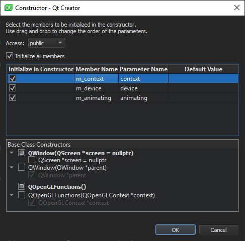

Applying Refactoring Actions
Qt Creator allows you to quickly and conveniently apply actions (quick fixes) to refactor your code by selecting them in a context menu. The actions available depend on the position of the cursor in the code editor.
To apply refactoring actions to C++ code, right-click an operand, conditional statement, string, or name to open a context menu. To apply refactoring actions to QML code, right-click an item ID or name.
In the context menu, select Refactoring and then select a refactoring action.
You can also press Alt+Enter to open a context menu that contains refactoring actions available in the current cursor position.
Creating Functions
You can apply refactoring actions to implement member functions, insert virtual functions of base classes, create getter and setter functions, and generate constructors. You can specify settings for generating the functions either globally for all projects or separately for each project in the build and run settings of the project.
Implementing Member Functions
You can apply the Create Implementations for Member Functions refactoring action to create implementations for all member functions in one go. In the Member Function Implementations dialog, you can specify whether the member functions are generated inline or outside the class.

Inserting Virtual Functions
You can apply the Insert Virtual Functions of Base Classes refactoring action to insert declarations and the corresponding definitions inside or outside the class or in an implementation file (if it exists).

Select the functions to insert in the list of available functions. You can filter the list and hide reimplemented functions from it.
You can add virtual or the override equivalent to the function declaration.
Creating Getters and Setters
You can apply the Create Getter and Setter Member Functions refactoring action to create either both getter and setter member functions for member variables or only a getter or setter.
Generating Constructors
You can apply the Generate Constructor refactoring action to create a public, protected, or private constructor for a class. Select the class members to initialize in the constructor. Drag and drop the parameters to specify their order in the constructor.

Specifying Settings for Refactoring Actions
You can specify settings for the refactoring actions either globally for all projects or separately for each project. To specify global options, select Tools > Options > C++ > Quick Fixes.
To specify custom settings for a particular project, select Projects > Project Settings > Quick Fixes > Custom Settings.
To revert to global settings, select Reset to Global. To delete the custom settings, select Delete Custom Settings File.
Function Locations
In the Generated Function Locations group, you can determine whether refactoring actions should generate getter and setter functions in the header file (inside or outside the class) or in the implementation file.
Function Names and Attributes
In the Getter Setter Generation Properties group, you can specify additional settings for getter and setter names, attributes, and parameters. You can specify that setter functions should be created as slots and that signals should be generated with the new value as a parameter.

Namespace Handling
In the Missing Namespace Handling group, select whether to generate missing namespaces, add using namespace where necessary, or rewrite types to match the existing namespaces.
Custom Parameter Types
In the Custom Getter Setter Templates group, specify how the code of a getter or setter function for a certain data type should look like. This is necessary for types where assignment cannot use operator=, as in the pre-defined settings for unique_ptr or where operator== is not suitable for comparison, as in the pre-defined settings for floating-point types. For example, if you have a special type MyClass, you can specify that a function, myCompare, should be used for comparison rather than the default of ==.
To specify special handling for a custom parameter type, select Add and set the parameter type, comparison, return expression, and return type. In the Return type field, you can use <new> and <cur> to access the parameter and current value. Use <type> to access the type and <T> for the template parameter.
Usually, arguments are passed by using a const reference. To pass arguments of a particular type as values, list them in the Value types field. Namespaces and template arguments are removed. The real Type must contain the given Type. For example, int matches int32_t but not vector<int>, and vector matches std::pmr::vector<int> but not std::optional<vector<int>>.
Summary of Refactoring Actions
If you use the Clang code model to parse the C++ files, the Clang fix-it hints that have been integrated into Qt Creator are also available to you. In addition to the standard ways of activating refactoring actions, you can select the actions that are applicable on a line in the context menu in the left margin of the code editor.
Refactoring C++ Code
You can apply the following types of refactoring actions to C++ code:
- Change binary operands
- Simplify if and while conditions (for example, move declarations out of if conditions)
- Modify strings (for example, set the encoding for a string to Latin-1, mark strings translatable, and convert symbol names to camel case)
- Create variable declarations
- Create function declarations and definitions
The following table summarizes the refactoring actions for C++ code. The action is available when the cursor is in the position described in the Activation column.
| Refactoring Action | Description | Activation |
|---|---|---|
| Add Curly Braces | Adds curly braces to an if statement that does not contain a compound statement. For example, rewrites
if (a)
b;
as
if (a) {
b;
}
| if |
| Move Declaration out of Condition | Moves a declaration out of an if or while condition to simplify the condition. For example, rewritesif (Type name = foo()) {} as Type name = foo; if (name) {} | Name of the introduced variable |
| Rewrite Condition Using || | Rewrites the expression according to De Morgan's laws. For example, rewrites:!a && !b as !(a || b) | && |
| Rewrite Using operator | Rewrites an expression negating it and using the inverse operator. For example, rewrites:
| <=, <, >, >=, == or != |
| Split Declaration | Splits a simple declaration into several declarations. For example, rewrites:int *a, b; as int *a; int b; | Type name or variable name |
| Split if Statement | Splits an if statement into several statements. For example, rewrites:if (something && something_else) { } as if (something) { if (something_else) { } } and if (something || something_else) x; with if (something) x; else if (something_else) x; | && or || |
| Swap Operands | Rewrites an expression in the inverse order using the inverse operator. For example, rewrites:a op b as b flipop a | <=, <, >, >=, ==, !=, && or || |
| Convert to Decimal | Converts an integer literal to decimal representation | Numeric literal |
| Convert to Hexadecimal | Converts an integer literal to hexadecimal representation | Numeric literal |
| Convert to Octal | Converts an integer literal to octal representation | Numeric literal |
| Convert to Objective-C String Literal | Converts a string literal to an Objective-C string literal if the file type is Objective-C(++). For example, rewrites the following strings"abcd" QLatin1String("abcd") QLatin1Literal("abcd") as
@"abcd"
| String literal |
| Enclose in QLatin1Char() | Sets the encoding for a character to Latin-1, unless the character is already enclosed in QLatin1Char, QT_TRANSLATE_NOOP, tr, trUtf8, QLatin1Literal, or QLatin1String. For example, rewrites
'a'
as
QLatin1Char('a')
| String literal |
| Enclose in QLatin1String() | Sets the encoding for a string to Latin-1, unless the string is already enclosed in QLatin1Char, QT_TRANSLATE_NOOP, tr, trUtf8, QLatin1Literal, or QLatin1String. For example, rewrites
"abcd"
as
QLatin1String("abcd")
| String literal |
| Mark as Translatable | Marks a string translatable. For example, rewrites "abcd" with one of the following options, depending on which of them is available:tr("abcd") QCoreApplication::translate("CONTEXT", "abcd") QT_TRANSLATE_NOOP("GLOBAL", "abcd") | String literal |
| Add Definition in ... | Inserts a definition stub for a function declaration either in the header file (inside or outside the class) or in the implementation file. For free functions, inserts the definition after the declaration of the function or in the implementation file. Qualified names are minimized when possible, instead of always being fully expanded. For example, rewrites
Class Foo {
void bar();
};
as (inside class)
Class Foo {
void bar() {
}
};
as (outside class)
Class Foo {
void bar();
};
void Foo::bar()
{
}
as (in implementation file) // Header file Class Foo { void bar(); }; // Implementation file void Foo::bar() { } | Function name |
Add Function Declaration | Inserts the member function declaration that matches the member function definition into the class declaration. The function can be public, protected, private, public slot, protected slot, or private slot. | Function name |
| Add Class Member | Adds a member declaration for the class member being initialized if it is not yet declared. You must enter the data type of the member. | Identifier |
| Create Implementations for Member Functions | Creates implementations for all member functions in one go. In the Member Function Implementations dialog, you can specify whether the member functions are generated inline or outside the class. | Function name |
| Switch with Next/Previous Parameter | Moves a parameter down or up one position in a parameter list. | Parameter in the declaration or definition of a function |
| Extract Function | Moves the selected code to a new function and replaces the block of code with a call to the new function. Enter a name for the function in the Extract Function Refactoring dialog. | Block of code selected |
| Extract Constant as Function Parameter | Replaces the selected literal and all its occurrences with the function parameter newParameter. The parameter newParameter will have the original literal as the default value. | Block of code selected |
| Add Local Declaration | Adds the type of an assignee, if the type of the right-hand side of the assignment is known. For example, rewrites
a = foo();
as
Type a = foo();
where Type is the return type of | Assignee |
| Convert to Camel Case | Converts a symbol name to camel case, where elements of the name are joined without delimiter characters and the initial character of each element is capitalized. For example, rewrites an_example_symbol as anExampleSymbol and AN_EXAMPLE_SYMBOL as AnExampleSymbol | Identifier |
| Complete Switch Statement | Adds all possible cases to a switch statement of the type enum | switch |
| Generate Missing Q_PROPERTY Members | Adds missing members to a Q_PROPERTY:
| Q_PROPERTY |
| Generate Q_PROPERTY and Missing Members | Generates a Q_PROPERTY and adds missing members to it, as described above. | Class member |
| Generate Constant Q_PROPERTY and Missing Members | Generates a constant Q_PROPERTY and adds missing members to it, as described above. | Class member |
| Generate Q_PROPERTY and Missing Members with Reset Function | Generates a Q_PROPERTY and adds missing members to it, as described above, but with an additional reset function. | Class member |
| Apply Changes | Keeps function declarations and definitions synchronized by checking for the matching declaration or definition when you edit a function signature and by applying the changes to the matching code. | Function signature. When this action is available, a light bulb icon appears:  |
| Add #include for undeclared or forward declared identifier | Adds an #include directive to the current file to make the definition of a symbol available. | Undeclared identifier |
| Add Forward Declaration | Adds a forward declaration for an undeclared identifier operation. | Undeclared identifier |
| Reformat Pointers or References | Reformats declarations with pointers or references according to the code style settings for the current project. In case no project is open, the current global code style settings are used. For example, rewrites: char*s; as char *s; When applied to selections, all suitable declarations in the selection are rewritten. | Declarations with pointers or references and selections containing such declarations |
| Create Getter and Setter Member Functions | Creates either both getter and setter member functions for member variables or only a getter or setter. | Member variable in class definition |
| Generate Getter and Setter | Creates getter and setter member functions for a member variable. | Member variable in class definition |
| Generate Getter | Creates a getter member function for a member variable. | Member variable in class definition |
| Generate Setter | Creates a setter member function for a member variable. | Member variable in class definition |
| Generate Constructor | Creates a constructor for a class. | Class definition |
| Move Function Definition | Moves a function definition to the implementation file, outside the class or back to its declaration. For example, rewrites:class Foo { void bar() { // do stuff here } }; as class Foo { void bar(); }; void Foo::bar() { // do stuff here } | Function signature |
| Move All Function Definitions | Moves all function definitions to the implementation file or outside the class. For example, rewrites:class Foo { void bar() { // do stuff here } void baz() { // do stuff here } }; as class Foo { void bar(); void baz(); }; void Foo::bar() { // do stuff here } void Foo::baz() { // do stuff here } | Class name |
| Assign to Local Variable | Adds a local variable which stores the return value of a function call or a new expression. For example, rewrites:QString s; s.toLatin1(); as QString s; QByteArray latin1 = s.toLatin1(); and
new Foo;
as Foo * localFoo = new Foo; | Function call or class name |
| Insert Virtual Functions of Base Classes | Inserts declarations and the corresponding definitions inside or outside the class or in an implementation file (if it exists). For more information, see Inserting Virtual Functions. | Class or base class name |
| Optimize for-Loop | Rewrites post increment operators as pre increment operators and post decrement operators as pre decrement operators. It also moves other than string or numeric literals and id expressions from the condition of a for loop to its initializer. For example, rewrites:for (int i = 0; i < 3 * 2; i++) as for (int i = 0, total = 3 * 2; i < total; ++i) | for |
| Escape String Literal as UTF-8 | Escapes non-ASCII characters in a string literal to hexadecimal escape sequences. String Literals are handled as UTF-8. | String literal |
| Unescape String Literal as UTF-8 | Unescapes octal or hexadecimal escape sequences in a string literal. String Literals are handled as UTF-8. | String literal |
| Convert to Stack Variable | Converts the selected pointer to a stack variable. For example, rewrites:QByteArray *foo = new QByteArray("foo"); foo->append("bar"); as QByteArray foo("foo"); foo.append("bar"); This operation is limited to work only within function scope. Also, the coding style for pointers and references is not respected yet. | Pointer Variable |
| Convert to Pointer | Converts the selected stack variable to a pointer. For example, rewrites:QByteArray foo = "foo"; foo.append("bar"); as QByteArray *foo = new QByteArray("foo"); foo->append("bar"); This operation is limited to work only within function scope. Also, the coding style for pointers and references is not respected yet. | Stack Variable |
Remove using namespace and Adjust Type Names Accordingly | Remove occurrences of using namespace in the local scope and adjust type names accordingly. | using directive |
Remove All Occurrences of using namespace in Global Scope and Adjust Type Names Accordingly | Remove all occurrences of using namespace in the global scope and adjust type names accordingly. | using directive |
| Convert connect() to Qt 5 Style | Converts a Qt 4 QObject::connect() to Qt 5 style. | QObject::connect() (Qt 4 style) |
Refactoring QML Code
You can apply the following types of refactoring actions to QML code:
- Rename IDs
- Split initializers
- Move a QML type into a separate file to reuse it in other .qml files
The following table summarizes the refactoring actions for QML code. The action is available when the cursor is in the position described in the Activation column.
| Refactoring Action | Description | Activation |
|---|---|---|
| Move Component into Separate File | Moves a QML type into a separate file. Give the new component a name and select whether properties are set for the new component or for the original one. | QML type name. |
| Split Initializer | Reformats a one-line type into a multi-line type. For example, rewrites
Item { x: 10; y: 20; width: 10 }
as
Item {
x: 10;
y: 20;
width: 10
}
| QML type property |
| Wrap Component in Loader | Wraps the type in a Component type and loads it dynamically in a Loader type. This is usually done to improve startup time. | QML type name |
| Add a message suppression comment | Prepends the line with an annotation comment that stops the message from being generated. | Error, warning or hint from static analysis |